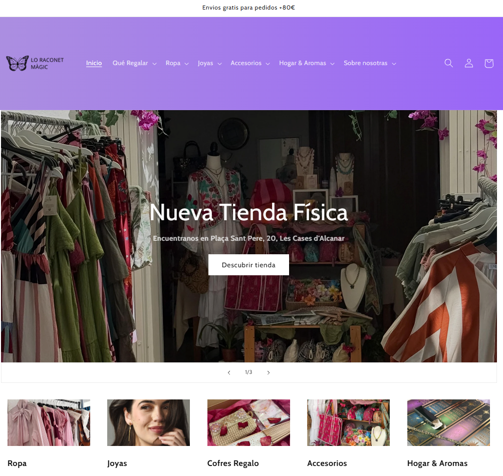
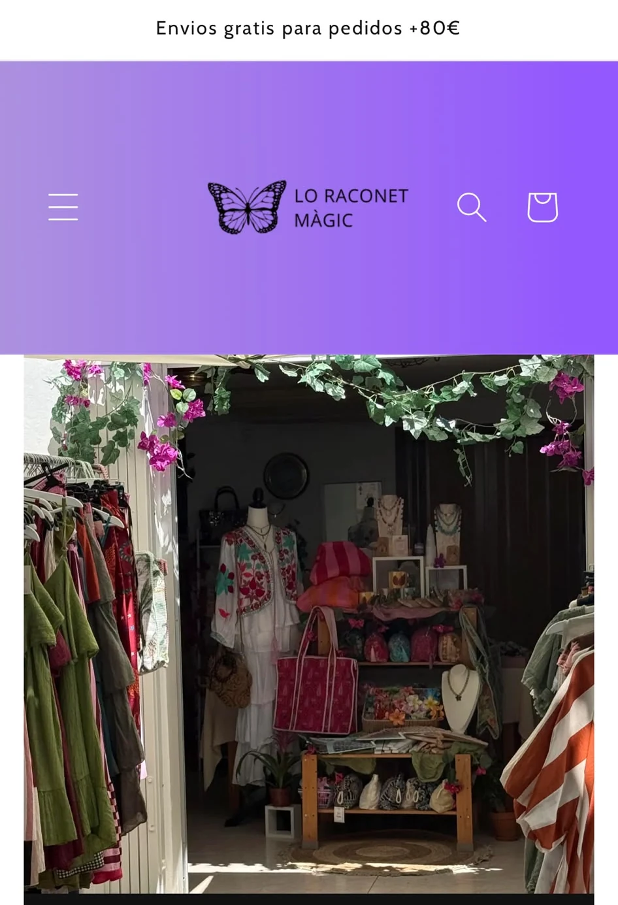

Restaurante
Europa
Fredes / Castelló
Identidad visual y presencia digital para un restaurante familiar con más de 50 años de historia.
VER PROYECTO ↗DISEÑADORA GRÁFICA
Y COMUNICADORA VISUAL
Una selección de proyectos,
identidades e historias visuales.
Fredes / Castelló
Identidad visual y presencia digital para un restaurante familiar con más de 50 años de historia.
VER PROYECTO ↗

tienda online / diseño digital
Diseño de tienda Shopify, organización del catálogo, experiencia de compra y posicionamiento web.
VER PROYECTO ↗Soy Tania, diseñadora gráfica y comunicadora visual. Tengo la cabeza llena de ideas, la costumbre de darles mil vueltas y muchas ganas de seguir aprendiendo.
Me gusta escuchar, entender lo que alguien tiene en mente y encontrar la forma de hacerlo realidad. Disfruto dando personalidad a cada proyecto, probando cosas nuevas y descubriendo todo lo que puedo aprender por el camino.